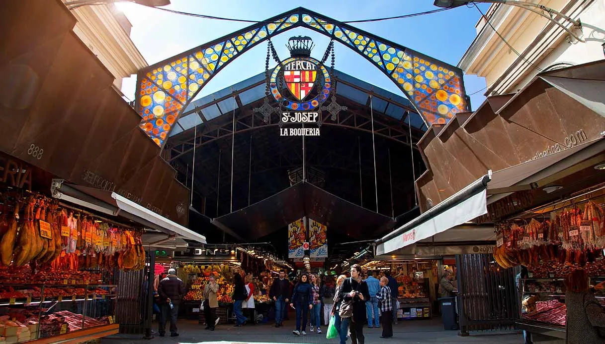
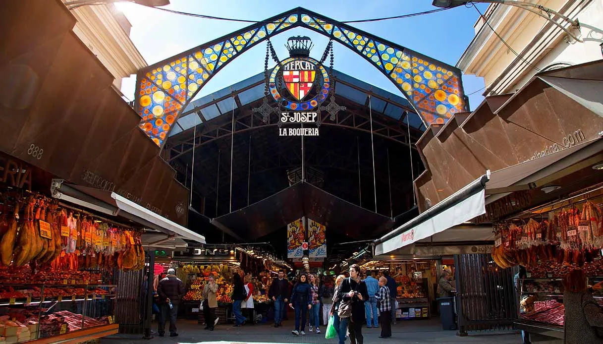
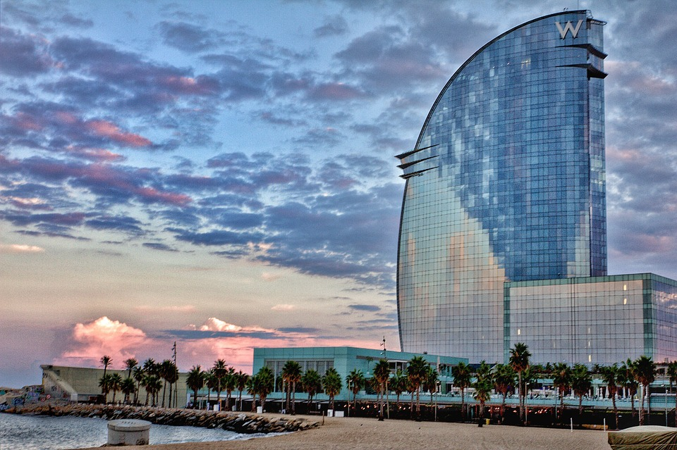
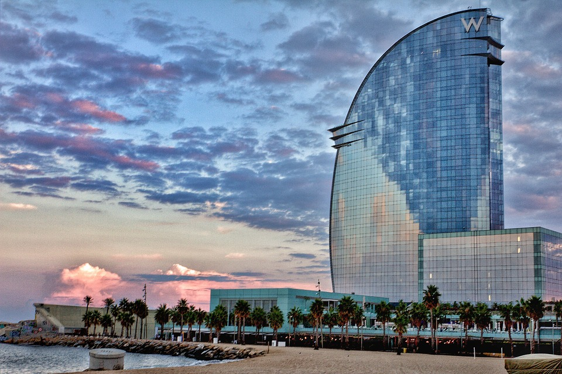

Sagrada Familia: è consideratat il monumento simbolo della città. La sua costruzione iniziò nel 1882 sotto il progetto di A.Guadì che subentrò nei lavori un anno dopo
modificando il progetto neogotico completamente. La parte costruita da Gaudí è stata dichiarata Patrimonio dell’Umanità dall’UNESCO nel 2005. La Commissione di costruzione
spera di completare i lavori nel 2026, quando ricorrerà il centenario della morte di Gaudí, grazie alle donazioni e al denaro riscosso dalle visite. La Sagrada Familia, vanta
infatti circa 4,5 milioni di visitatori annui. Inoltre nella Vergine del Carmelo, una delle quattro cripte dell'enorme chiesa vi è sepolto Antoni Gaud.
 La Rambla:la via più famosa di Barecllona è ricca di bancarelle da visitare e artisti di strada d'ascoltare.
Moloto popolata di giorno e di notte è ricca di edifici e punti di interesse come il Museo delle cere, il teatro Liceu e il mercato La Boqueria.
E’ dalla rambla che dopo 2km circa si arriva al bellissimo porto di Barcellona altrettanto ricco di locali e negozi. Questa meravigliosa via è divisa in cinque parti
chiamte Les Ramblas.La Rambla de Canaletes, nome popolare dato alla fonte di Canaletes, che risale ai tempi più remoti di costruzione di Barcellona. Secondo il detto popolare, chi beve alla fonte ritorna sempre a Barcellona.
La Rambla de los Estudios, nome derivato dalla presenza dell’Università con il suo edificio conquecentesco. In direzione del mare si arriva alla Rambla de les flors o Rambla de Sant Josep, per trovarsi nella zona del convento di San Jose,
l’unico posto in cui nell’Ottocento si vendevano fiori. Si continua con la Rambla del Centro, conosciuta anche come la Rambla des Caputxins (Cappuccini), per la presenza dell’ex convento dei frati Cappuccini.
L’ultima parte è la Rambla de Mar dove è possibile prendere l’ascensore che ti porta in cima e gustarti un magnifico panorama sulla città di Barcellona.
La Rambla:la via più famosa di Barecllona è ricca di bancarelle da visitare e artisti di strada d'ascoltare.
Moloto popolata di giorno e di notte è ricca di edifici e punti di interesse come il Museo delle cere, il teatro Liceu e il mercato La Boqueria.
E’ dalla rambla che dopo 2km circa si arriva al bellissimo porto di Barcellona altrettanto ricco di locali e negozi. Questa meravigliosa via è divisa in cinque parti
chiamte Les Ramblas.La Rambla de Canaletes, nome popolare dato alla fonte di Canaletes, che risale ai tempi più remoti di costruzione di Barcellona. Secondo il detto popolare, chi beve alla fonte ritorna sempre a Barcellona.
La Rambla de los Estudios, nome derivato dalla presenza dell’Università con il suo edificio conquecentesco. In direzione del mare si arriva alla Rambla de les flors o Rambla de Sant Josep, per trovarsi nella zona del convento di San Jose,
l’unico posto in cui nell’Ottocento si vendevano fiori. Si continua con la Rambla del Centro, conosciuta anche come la Rambla des Caputxins (Cappuccini), per la presenza dell’ex convento dei frati Cappuccini.
L’ultima parte è la Rambla de Mar dove è possibile prendere l’ascensore che ti porta in cima e gustarti un magnifico panorama sulla città di Barcellona.
 Il mercato della Boqueria: questo nome deriva dal catalano coem "Mercat de Sant Josep". È anche uno fra i mercati più antichi di Spagna nato agli inizi del XVII secolo alle porte della città nella piana del Pla de la Boqueria, fu inaugurato poi, nel 1836, dove si trova tuttora a metà della popolare Rambla,
fra il Palazzo della Virreina e il Teatro Liceu. Dove ora c'è il mercato, una volta c'era il convento di San Josep, dal quale deriva il suo nome. Dopo la distruzione del convento, fu costruita una grande piazza con un importante colonnato, e il mercato fu trasferito fra quelle colonne. Era quindi inizialmente un mercato all'aperto fino a che nel 1840 venne coperto.
Oggi La Boqueria non è solo un mercato dove si possono trovare prodotti altrimenti difficili da reperire, ma anche un'attrazione turistica che attira visitatori da tutto il mondo. Con il passare degli anni sono subentrati commercianti di diversi paesi che offrono prodotti della loro terra.

Parco Güell: un'altra delle costruzioni acrhitettoniche di Gaudì, inizialmente doveva essere un complesso residenziale per la borghesia del '900.
Il progetto venne poi abbandonato e il parco fu inaugurato nel 1922 diventando uno dei principali luoghi d’interesse turistico della città.
Nel 1984, fu dichiarato Patrimonio dell’Umanità dell’UNESCO grazie ai 17 ettari coperti da forme ondulate, colonne dall’aspetto di alberi, figure di animali e forme geometriche.
La maggior parte delle superfici sono decorate con mosaici, fabbricati con pezzi di ceramica colorata. Il monumento più conosciuto all'interno di Prco Güell è senza dubbio la sua fontana a fotma di drago
Il mercato della Boqueria: questo nome deriva dal catalano coem "Mercat de Sant Josep". È anche uno fra i mercati più antichi di Spagna nato agli inizi del XVII secolo alle porte della città nella piana del Pla de la Boqueria, fu inaugurato poi, nel 1836, dove si trova tuttora a metà della popolare Rambla,
fra il Palazzo della Virreina e il Teatro Liceu. Dove ora c'è il mercato, una volta c'era il convento di San Josep, dal quale deriva il suo nome. Dopo la distruzione del convento, fu costruita una grande piazza con un importante colonnato, e il mercato fu trasferito fra quelle colonne. Era quindi inizialmente un mercato all'aperto fino a che nel 1840 venne coperto.
Oggi La Boqueria non è solo un mercato dove si possono trovare prodotti altrimenti difficili da reperire, ma anche un'attrazione turistica che attira visitatori da tutto il mondo. Con il passare degli anni sono subentrati commercianti di diversi paesi che offrono prodotti della loro terra.

Parco Güell: un'altra delle costruzioni acrhitettoniche di Gaudì, inizialmente doveva essere un complesso residenziale per la borghesia del '900.
Il progetto venne poi abbandonato e il parco fu inaugurato nel 1922 diventando uno dei principali luoghi d’interesse turistico della città.
Nel 1984, fu dichiarato Patrimonio dell’Umanità dell’UNESCO grazie ai 17 ettari coperti da forme ondulate, colonne dall’aspetto di alberi, figure di animali e forme geometriche.
La maggior parte delle superfici sono decorate con mosaici, fabbricati con pezzi di ceramica colorata. Il monumento più conosciuto all'interno di Prco Güell è senza dubbio la sua fontana a fotma di drago
 Casa Milà: nota come La Pedrera (“cava” in catalano), è l’ultima opera civile di Antoni Gaudí, iniziata nel 1906 e completata nel 1912. Inserita nell’elenco del patrimonio mondiale nel 1984, quest’opera è stata, insieme a Parco Güell,
uno dei primi siti dell’era industriale a essere inserito nella lista dei luoghi più eccezionali a livello mondiale. Il soprannome “La Pedrera” deriva dal suo aspetto esterno, che vede un grande utilizzo della pietra, prevalentemente per la progettazione della facciata e dei balconi.
Casa Milà: nota come La Pedrera (“cava” in catalano), è l’ultima opera civile di Antoni Gaudí, iniziata nel 1906 e completata nel 1912. Inserita nell’elenco del patrimonio mondiale nel 1984, quest’opera è stata, insieme a Parco Güell,
uno dei primi siti dell’era industriale a essere inserito nella lista dei luoghi più eccezionali a livello mondiale. Il soprannome “La Pedrera” deriva dal suo aspetto esterno, che vede un grande utilizzo della pietra, prevalentemente per la progettazione della facciata e dei balconi.
![Image](>
Collina di Montjuic: Il Montjuïc è una collina alta 192 metri che si trova a sud di Barcellona vicino al porto industriale.
La collina è stato il luogo di nascita della città e la sua posizione strategica sul Mediterraneo e sul fiume Llobregat l'ha resa importante nel corso della storia,
tanto che è stata oggetto di diverse fortificazioni, tra cui il Castello di Montjuïc. L'area è anche associata agli imprigionamenti e alle esecuzioni politiche avvenute
durante la guerra civile spagnola e sotto la dittatura franchista. E' una vera e propria città nella città, la si può raggiungere con la caratteristica funivia che parte dal porto,
ma anche con una moderna telecabina, con i mezzi pubblici o persino a piedi. Giunti in vetta le attrazioni,oltre al castello di Montjuic, lo Stadio Olimpico casa dell’Espanyol fino al 2009 e meraviglia architettonica della città,
ma anche il Museu Nacional d’Art de Catalunya e la Fontana Magica con uno spettacolo di fontane danzanti di luci e colori che illumina le notti di Barcellona.
<img src=) La Barceloneta:è uno dei quartieri più famosi di Barcellona. È un quartiere marittimo, ricco di magia e di storia, che si trova nel distretto di Port Vell.
Fino al XVIII secolo La Barceloneta era una zona disabitata e degradata. Nel 1754 i pescatori iniziarono a stanziarsi in questa zona della città, per la sua vicinanza al mare. Il quartiere è stato ristrutturato durante i lavori per le Olimpiadi del 1992.
Malgrado abbia acquisito un aspetto più moderno, attualmente La Barceloneta conserva ancora il suo fascino speciale. Le sue strade strette e le facciate scure per la salsedine, creano un'atmosfera tranquilla e familiare, distante dalla confusione cittadina.
Vi si possono fare molte attività di benessere prendendo spunto dai cittadini del posto che passeggiano, corrono, vanno in bicicletta e si rilassano in riva al mare.

La Barceloneta:è uno dei quartieri più famosi di Barcellona. È un quartiere marittimo, ricco di magia e di storia, che si trova nel distretto di Port Vell.
Fino al XVIII secolo La Barceloneta era una zona disabitata e degradata. Nel 1754 i pescatori iniziarono a stanziarsi in questa zona della città, per la sua vicinanza al mare. Il quartiere è stato ristrutturato durante i lavori per le Olimpiadi del 1992.
Malgrado abbia acquisito un aspetto più moderno, attualmente La Barceloneta conserva ancora il suo fascino speciale. Le sue strade strette e le facciate scure per la salsedine, creano un'atmosfera tranquilla e familiare, distante dalla confusione cittadina.
Vi si possono fare molte attività di benessere prendendo spunto dai cittadini del posto che passeggiano, corrono, vanno in bicicletta e si rilassano in riva al mare.
